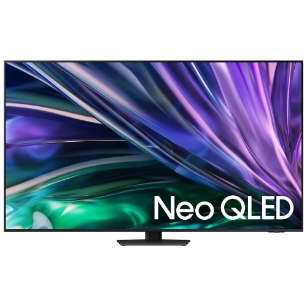
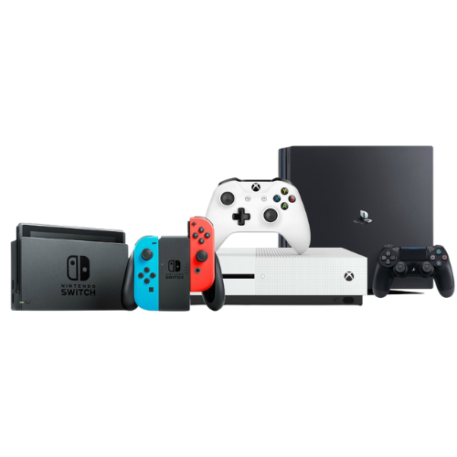
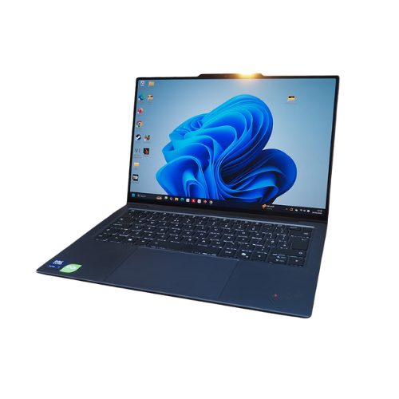
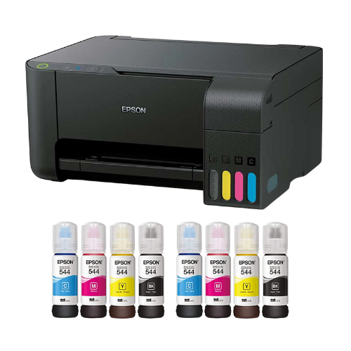
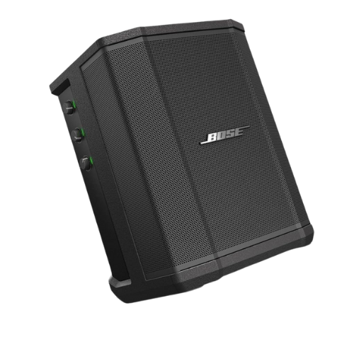

¿Qué equipo deseas reparar?

Televisores

Video Juegos

Laptops

Impresoras

Bocinas Portátiles
Reparamos televisores, laptops, impresoras, video juegos y bocinas portátiles con atención rápida y trato profesional.

Televisores

Video Juegos

Laptops

Impresoras

Bocinas Portátiles
En PanaRepara ofrecemos diagnóstico y reparación de televisores, laptops, impresoras, video juegos y bocinas portátiles. Nuestro objetivo es ayudarte a recuperar tus equipos con una atención clara, rápida y confiable.
Si buscas reparación de televisores en Panamá, reparación de impresoras, reparación de laptops o servicio técnico para equipos electrónicos, puedes contactarnos por WhatsApp o llamada para coordinar tu atención.
Evaluamos tu equipo con criterio técnico para detectar la falla real.
Te respondemos por WhatsApp o llamada para orientarte y agendar.
Trabajamos con televisores, impresoras, laptops, consolas y audio portátil.
¿Tienes alguna duda o quieres agendar un servicio?